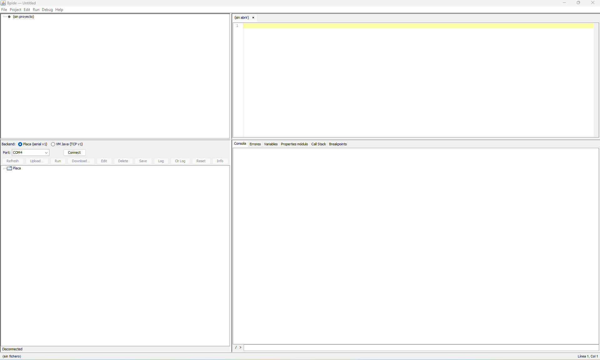
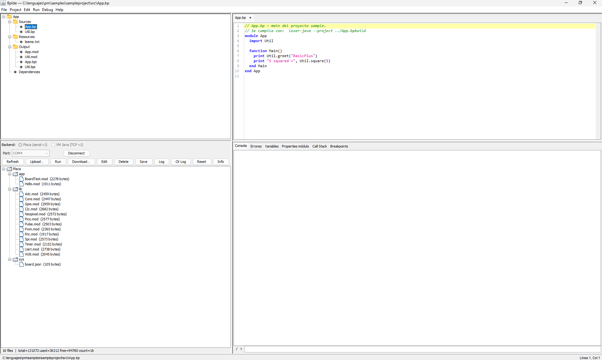
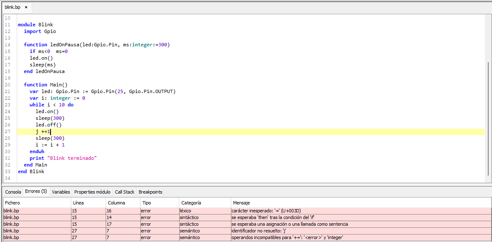
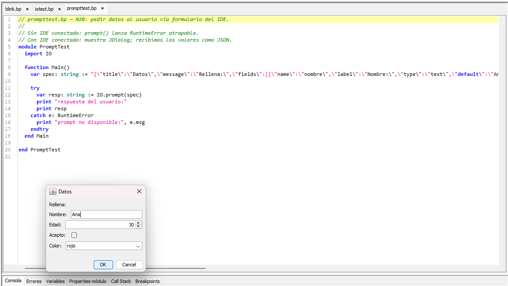
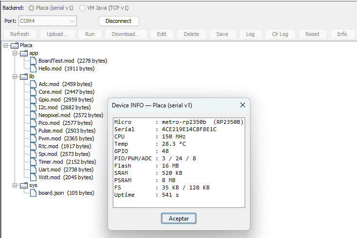
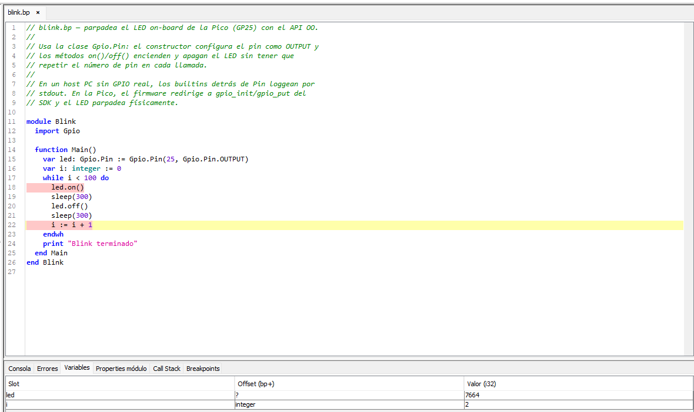

BasicPlus — Guía del IDE
BpIde es el entorno de desarrollo de BasicPlus: editor, compilador, ejecución local y remota, explorador de la placa y depurador — en un único jar sin instalación.
1. Arrancar el IDE
java -jar BpIde-1.0-SNAPSHOT-shaded.jarNo hay instalador ni configuración previa: el jar lleva dentro el compilador, el cliente de la VM y este manual (Help → Manual, F1).
2. La ventana

Cuatro zonas:
- Árbol del proyecto (arriba-izquierda): fuentes, recursos, salida compilada y dependencias del proyecto abierto.
- Editor (arriba-derecha): pestañas con resaltado de sintaxis BP; la línea actual queda marcada y la posición se ve en la barra de estado.
- Explorador de la placa (abajo-izquierda): el selector de backend (Placa serial o VM Java por TCP), el puerto, el botón Connect y — una vez conectado — el árbol de ficheros del micro con su botonera.
- Consola y depuración (abajo-derecha): pestañas
Consola, Errores, Variables,
Properties módulo, Call Stack y
Breakpoints. Abajo, el prompt
/ >de la consola de comandos del micro (§7).
3. Proyectos

Project → New Project crea la estructura estándar;
File → New añade ficheros sueltos. Un proyecto se
describe en su .bpbuild/.bpproject (JSON,
ver la referencia §16) y se
organiza en:
- Sources — los
.bpdel proyecto (en la captura:App.bpyUtil.bp). - Resources — ficheros de datos que el Run copia al micro tal cual (configuraciones, tablas…).
- Output — lo que produce el compilador:
.mod(bytecode) y.bpi(interfaces). - Dependencies — módulos importados resueltos.
4. Editar y compilar
Run → Compile compila el fichero o el proyecto; los diagnósticos aparecen en la pestaña Errores con su fichero, línea, columna, tipo (léxico / sintáctico / semántico) y mensaje, separando errores de avisos. Doble clic en una fila salta a esa posición en el editor.

El compilador no se detiene en el primer error ni se
ahoga en cascadas: se recupera a nivel de sentencia/función y sigue,
de modo que una sola pasada saca a la luz errores reales de todo el
módulo. En la captura conviven un error léxico+sintáctico (un
= donde iba := — el lenguaje usa
:= para asignar) y, en otra función más abajo, un
identificador no declarado: el fallo de la primera no oculta el de la
segunda. Las cascadas espurias se podan (un operando ya erróneo no
genera errores derivados) y, si hubiera muchísimos, se recortan con
un «y N más».
5. Ejecutar (y parar)
- Run → Run: ejecuta en el PC, sobre la VM Java (daemon local). La salida del programa llega a la Consola.
- Run → Run on Device: sube el
.moda la placa conectada (con las dependencias que falten y los resources del proyecto) y lo ejecuta allí; la salida vuelve en vivo a la Consola. - Run → Stop (Ctrl+F2): aborta el programa en marcha — local o en placa — sin reiniciar nada. En la placa es un KILL cooperativo: la VM muere limpia y el micro sigue respondiendo.
Si el programa pide datos al usuario con IO.prompt, el
IDE despliega un formulario y la ejecución se pausa hasta que lo
rellenas: campos de texto, numéricos, casillas y desplegables según
lo que el programa declare.

IO.prompt es una utilidad de desarrollo de la VM Java
(PC): el formulario lo dibuja el IDE. En los micros no está disponible
— allí IO.prompt lanza un RuntimeError
atrapable, así que envuélvelo en try/catch si tu programa
ha de correr también en placa.
5.1 native (AOT): instalar el toolchain ARM
Si el programa usa function native, en Run on Device el
IDE compila esas funciones a código máquina (.mdn) y lo sube
junto al .mod — en las placas ARM (RP2350 y STM32). Para ese
paso hace falta tener instalado en el PC el toolchain ARM
bare-metal (arm-none-eabi-gcc):
- Windows — el instalador del Arm GNU Toolchain (arm-none-eabi) de developer.arm.com. Si ya usas STM32CubeIDE o el pico-sdk, ya tienes uno instalado.
- Linux —
sudo apt install gcc-arm-none-eabi(Debian/Ubuntu) o el paquete equivalente de tu distribución.
El IDE lo autodetecta (la instalación estándar del Arm GNU
Toolchain, o el PATH). Si no lo encuentra, se fija a mano en
Project → AOT (toolchain)…: la ruta de
arm-none-eabi-gcc y la raíz de bpgenvm-c (aporta
las cabeceras del runtime), cada una con su botón Detectar. Ese
ajuste es por máquina; qué proyectos usan AOT (y para qué placa) va en el
.bpbuild del proyecto (sección "aot").
El toolchain es opcional: si no está, el IDE avisa y el
programa corre interpretado — mismo comportamiento, menos velocidad
en los kernels de cómputo. En los ESP32 (S3 y P4) native corre
interpretado en esta versión.
6. Conectarse a la placa
En el Explorador: elige backend Placa (serial v1), el puerto COM del micro y pulsa Connect. El árbol muestra el filesystem interno del dispositivo:
/app— tus programas (.modsubidos)./lib— la biblioteca estándar embebida en el firmware (se reinstala sola en cada arranque)./sys— configuración:board.json(identidad de la placa),device.json,auto.txt(autorun, §10).
La botonera opera sobre el fichero seleccionado: Refresh, Upload, Run, Download, Edit (abre un editor sobre el fichero del micro — también con doble clic), Delete, Save (persiste el FS a flash), Log/Clr Log (el log persistente del firmware), Reset e Info (§8). La barra inferior del panel resume el FS: ficheros, bytes usados y libres.
El mismo panel sirve para la VM Java (TCP v1): apuntas a un daemon local o remoto y obtienes el mismo árbol y los mismos botones — el protocolo es idéntico.
7. La consola del micro
El prompt / > bajo la Consola habla directamente con
el dispositivo conectado. help lista los comandos:
dir [ruta] · cd <ruta> · type <fich> · edit <fich> · run <fich> · del <fich>
kill · autorun [fich|off] · mem · save · log · reset · cls · help
Dos de ellos merecen subrayado: kill aborta el programa
en ejecución (equivale a Run → Stop) y autorun gestiona
el arranque autónomo (§10). Si conectas con un programa corriendo, el
explorador avisará «placa ocupada» — kill recupera el
control.
8. INFO del dispositivo

El botón Info interroga al firmware. En la captura,
una Adafruit Metro RP2350: el micro y su variante (RP2350B detectada
en runtime vía board.json — 48 GPIO, 24 salidas PWM, 8
canales ADC), el serial único, la frecuencia y temperatura, la flash
real medida por JEDEC (16 MB), la SRAM, la PSRAM detectada y
autoprobada (8 MB, usada como heap de la VM), la ocupación del FS y
el uptime.
9. Depurar
El depurador funciona igual contra la VM local y dentro del micro (Debug on Device):
- F9 — poner/quitar breakpoint en la línea.
- Debug → Debug / Debug on Device — arranca en modo depuración.
- F10 step over · F11 step into · Shift+F11 step out · Ctrl+F5 stop.
- En pausa: Variables (locales por nombre), Properties módulo, Call Stack y la lista de Breakpoints.

En la captura, la ejecución está detenida: la línea con breakpoint
aparece marcada, la línea actual resaltada, y la pestaña
Variables muestra los locales por nombre con su tipo y valor
en ese instante (aquí led y i dentro del
bucle). El recorrido es idéntico depurando en la VM local o sobre el
propio micro.
10. Dispositivo autónomo
Con tu programa ya en la placa: autorun MiApp en la
consola (escribe /sys/auto.txt y lo persiste) y
reset. A partir de ahí el micro arranca tu programa solo,
sin PC. El IDE puede conectarse igualmente con el programa corriendo:
kill lo para y autorun off lo retira —
nunca hace falta reflashear. Detalle completo en el
inicio rápido.
Guía del IDE BasicPlus — capturas de Eduardo sobre una Metro RP2350, generada al hilo del cierre de V2.